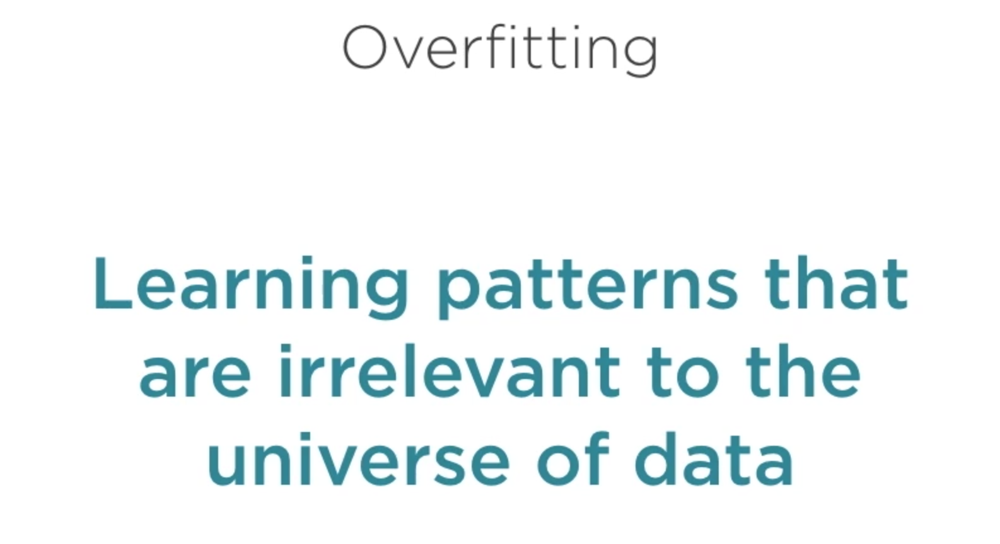
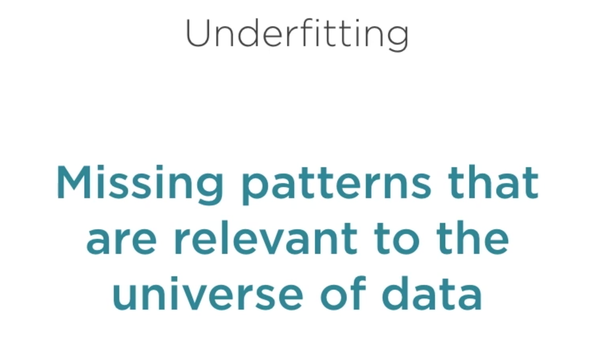
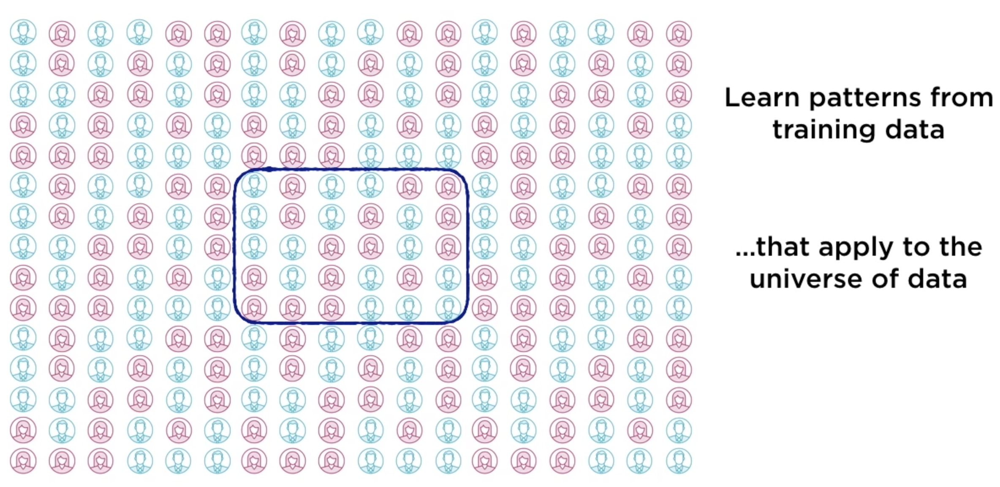

Arboles de decisión: Hiperparámetros, Random Forest y Optimización de Parámetros
Contents
Arboles de decisión: Hiperparámetros, Random Forest y Optimización de Parámetros¶
import os
import pandas as pd
from sklearn.tree import DecisionTreeClassifier
from sklearn.model_selection import train_test_split
from sklearn.metrics import accuracy_score, confusion_matrix, precision_score, recall_score, f1_score
---------------------------------------------------------------------------
ModuleNotFoundError Traceback (most recent call last)
Input In [1], in <module>
1 import os
2 import pandas as pd
----> 3 from sklearn.tree import DecisionTreeClassifier
4 from sklearn.model_selection import train_test_split
5 from sklearn.metrics import accuracy_score, confusion_matrix, precision_score, recall_score, f1_score
ModuleNotFoundError: No module named 'sklearn'
df = pd.read_csv(os.path.join('../Datasets/diabetes.csv'))
df.head()
| Pregnancies | Glucose | BloodPressure | SkinThickness | Insulin | BMI | DiabetesPedigreeFunction | Age | Outcome | |
|---|---|---|---|---|---|---|---|---|---|
| 0 | 6 | 148 | 72 | 35 | 0 | 33.6 | 0.627 | 50 | 1 |
| 1 | 1 | 85 | 66 | 29 | 0 | 26.6 | 0.351 | 31 | 0 |
| 2 | 8 | 183 | 64 | 0 | 0 | 23.3 | 0.672 | 32 | 1 |
| 3 | 1 | 89 | 66 | 23 | 94 | 28.1 | 0.167 | 21 | 0 |
| 4 | 0 | 137 | 40 | 35 | 168 | 43.1 | 2.288 | 33 | 1 |
feature_cols = ['Pregnancies', 'Insulin', 'BMI', 'Age','Glucose','BloodPressure','DiabetesPedigreeFunction']
X = df[feature_cols]
Y = df["Outcome"]
X_train, X_test, Y_train, Y_test = train_test_split(X, Y, test_size=0.3, random_state=1) # 70% training, 30% test
print(X_train.shape, X_test.shape, Y_train.shape, Y_test.shape)
(537, 7) (231, 7) (537,) (231,)
# baseline no incluye poda (max_depth)
treev1 = DecisionTreeClassifier()
treev1.fit(X_train, Y_train)
DecisionTreeClassifier(ccp_alpha=0.0, class_weight=None, criterion='gini',
max_depth=None, max_features=None, max_leaf_nodes=None,
min_impurity_decrease=0.0, min_impurity_split=None,
min_samples_leaf=1, min_samples_split=2,
min_weight_fraction_leaf=0.0, presort='deprecated',
random_state=None, splitter='best')
Y_pred = treev1.predict(X_test)
Y_pred
array([0, 0, 0, 1, 0, 0, 0, 0, 0, 0, 1, 1, 1, 1, 0, 0, 0, 1, 0, 1, 1, 0,
1, 0, 0, 1, 0, 1, 0, 0, 0, 1, 0, 1, 1, 0, 0, 1, 0, 1, 0, 0, 0, 0,
0, 0, 0, 1, 0, 0, 0, 1, 1, 0, 1, 0, 1, 0, 0, 1, 1, 0, 0, 0, 1, 0,
0, 0, 1, 1, 1, 1, 0, 0, 1, 0, 1, 0, 0, 1, 1, 0, 1, 0, 0, 1, 0, 0,
1, 0, 0, 0, 1, 0, 1, 0, 1, 0, 1, 0, 0, 1, 0, 0, 0, 0, 0, 1, 1, 0,
0, 0, 0, 0, 0, 0, 0, 0, 1, 0, 0, 1, 0, 0, 0, 0, 0, 0, 0, 0, 1, 0,
0, 1, 0, 0, 0, 1, 0, 0, 1, 0, 0, 1, 0, 0, 0, 0, 0, 0, 1, 0, 0, 0,
1, 0, 1, 0, 0, 0, 1, 1, 0, 0, 1, 0, 1, 1, 1, 1, 1, 1, 1, 0, 1, 0,
1, 0, 0, 0, 1, 1, 0, 0, 0, 0, 0, 1, 0, 0, 0, 0, 0, 0, 1, 0, 1, 0,
0, 1, 1, 1, 1, 0, 1, 1, 0, 0, 0, 0, 0, 0, 0, 1, 1, 1, 0, 0, 0, 0,
0, 0, 0, 1, 0, 0, 0, 0, 0, 1, 0])
def metricas_desempenio(tree):
print('accuracy del clasificador - version 1 : {0:.2f}'.format(accuracy_score(Y_test, tree.predict(X_test))))
print('matriz de confusión del clasificador - version 1: \n {0}'.format(confusion_matrix(Y_test, tree.predict(X_test))))
print('precision del clasificador - version 1 : {0:.2f}'.format(precision_score(Y_test, tree.predict(X_test))))
print('recall del clasificador - version 1 : {0:.2f}'.format(recall_score(Y_test, tree.predict(X_test))))
print('f1 del clasificador - version 1 : {0:.2f}'.format(f1_score(Y_test, tree.predict(X_test))))
metricas_desempenio(treev1)
accuracy del clasificador - version 1 : 0.68
matriz de confusión del clasificador - version 1:
[[111 35]
[ 40 45]]
precision del clasificador - version 1 : 0.56
recall del clasificador - version 1 : 0.53
f1 del clasificador - version 1 : 0.55
#Ajustar algunos hiperparámetros
tree_v2 = DecisionTreeClassifier(criterion="entropy", max_depth=3)
tree_v2.fit(X_train, Y_train)
DecisionTreeClassifier(ccp_alpha=0.0, class_weight=None, criterion='entropy',
max_depth=3, max_features=None, max_leaf_nodes=None,
min_impurity_decrease=0.0, min_impurity_split=None,
min_samples_leaf=1, min_samples_split=2,
min_weight_fraction_leaf=0.0, presort='deprecated',
random_state=None, splitter='best')
metricas_desempenio(tree_v2)
accuracy del clasificador - version 1 : 0.77
matriz de confusión del clasificador - version 1:
[[124 22]
[ 31 54]]
precision del clasificador - version 1 : 0.71
recall del clasificador - version 1 : 0.64
f1 del clasificador - version 1 : 0.67
Hiperparámetros para ajustar la complejidad del modelo¶
class_weight=None importancia relativa de los valores de clasificación
criterion=’entropy’/’gini’
max_depth=3 distancia max entre a raiz y las hojas
max_features=None numero max de variables a considerar
max_leaf_nodes=20 numero max de hojas
min_impurity_decrease=0.0
min_impurity_split=None (Deprecado)
min_samples_leaf=1 Podar si quedan menos que este numero de ejemplos
min_samples_split=2 Continuar si quedan al menos esta cantidad de ejemplos
min_weight_fraction_leaf=0.0 Porcentaje minimo de ejemplo para continuar
{kind=link}
Más allá de cierto umbral, la complejidad del modelo afecta negativamente el desempeño debido al sobreajuste
Sobreajuste¶
  {kind=link}
{kind=link}
{kind=link}
Como evitar? En el caso particular de los árboles de decisión, reducir nodos del arbol cuando no incrementan los indicadores con una buena cantidad de datos de prueba (poda - pruning)
{kind=link}
{kind=link}
{kind=link}
Random Forest¶
Se crean varios árboles INDEPENDIENTES variando los casos/observaciones del conjunto de entrenamiento y/o las variables empleadas durante el proceso de entrenamiento.
Las predicciones de cada modelo (árbol) tienen el mismo peso y el resultado final es el voto de mayoría
Parámetros:
n_estimators número de clasificadores, árboles en este caso.
Los valores adecuados para este y otros parámetros se obtienen via experimentación (prueba y error). Si es posible, se recomienda tener varios conjuntos de prueba para seleccionar el modelo con el mejor desempeño (promedio) en todos los conjunto de prueba
from sklearn.ensemble import RandomForestClassifier
#Ajustar n_estimators puede reducir la posiblidad de overfitting
tree_v3 = RandomForestClassifier(n_estimators=10)
tree_v3
RandomForestClassifier(bootstrap=True, ccp_alpha=0.0, class_weight=None,
criterion='gini', max_depth=None, max_features='auto',
max_leaf_nodes=None, max_samples=None,
min_impurity_decrease=0.0, min_impurity_split=None,
min_samples_leaf=1, min_samples_split=2,
min_weight_fraction_leaf=0.0, n_estimators=10,
n_jobs=None, oob_score=False, random_state=None,
verbose=0, warm_start=False)
tree_v3.fit(X_train, Y_train)
RandomForestClassifier(bootstrap=True, ccp_alpha=0.0, class_weight=None,
criterion='gini', max_depth=None, max_features='auto',
max_leaf_nodes=None, max_samples=None,
min_impurity_decrease=0.0, min_impurity_split=None,
min_samples_leaf=1, min_samples_split=2,
min_weight_fraction_leaf=0.0, n_estimators=10,
n_jobs=None, oob_score=False, random_state=None,
verbose=0, warm_start=False)
metricas_desempenio(tree_v3)
accuracy del clasificador - version 1 : 0.77
matriz de confusión del clasificador - version 1:
[[132 14]
[ 38 47]]
precision del clasificador - version 1 : 0.77
recall del clasificador - version 1 : 0.55
f1 del clasificador - version 1 : 0.64
Gradient Boosted Trees¶
Los arboles se construyen en secuencia a partir de una fracción del conjunto de entrenamiento; la idea central es que el siguiente árbol corriga los errores del anterior.:
Inicialmente, todos los ejemplos tienen la misma probabilidad de ser seleccionados. A partir del segundo árbol, los ejemplos que fueros incorrectamente clasificados por el árbol anterior tienen mayor probabilidad de ser seleccionados. (para detectar patrones que no fueron detectados por el anterior)
En consecuencia, cada árbol se crea a partir de una fracción diferente del conjunto de entrenamiento. En la colección final, la clasificación de cada árbol tiene un peso mayor en función del desempeño obtenido con el conjuto de entrenamiento.
from xgboost.sklearn import XGBClassifier
tree_v4 = XGBClassifier(n_estimators=10)
tree_v4
XGBClassifier(base_score=None, booster=None, colsample_bylevel=None,
colsample_bynode=None, colsample_bytree=None, gamma=None,
gpu_id=None, importance_type='gain', interaction_constraints=None,
learning_rate=None, max_delta_step=None, max_depth=None,
min_child_weight=None, missing=nan, monotone_constraints=None,
n_estimators=10, n_jobs=None, num_parallel_tree=None,
objective='binary:logistic', random_state=None, reg_alpha=None,
reg_lambda=None, scale_pos_weight=None, subsample=None,
tree_method=None, validate_parameters=False, verbosity=None)
tree_v4.fit(X_train, Y_train)
XGBClassifier(base_score=0.5, booster=None, colsample_bylevel=1,
colsample_bynode=1, colsample_bytree=1, gamma=0, gpu_id=-1,
importance_type='gain', interaction_constraints=None,
learning_rate=0.300000012, max_delta_step=0, max_depth=6,
min_child_weight=1, missing=nan, monotone_constraints=None,
n_estimators=10, n_jobs=0, num_parallel_tree=1,
objective='binary:logistic', random_state=0, reg_alpha=0,
reg_lambda=1, scale_pos_weight=1, subsample=1, tree_method=None,
validate_parameters=False, verbosity=None)
metricas_desempenio(tree_v4)
accuracy del clasificador - version 1 : 0.80
matriz de confusión del clasificador - version 1:
[[131 15]
[ 32 53]]
precision del clasificador - version 1 : 0.78
recall del clasificador - version 1 : 0.62
f1 del clasificador - version 1 : 0.69
Parámetros que se pueden emplear para evitar sobre ajuste (overfitting)¶
n_estimators: a mayor cantidad de ejemplos, se puede incrementar el valor n_estimators para evitar sobreajuste
learning_rate, determina la probabilidad de que un ejemplo sea seleccionado en la siguiente iteracion, se recomienda un valor entre 0.1 - 0.2 para reducir la probabilidad de que se produzca overfitting
subsample, permite controlar el tamaño de la fracción del conjunto de entrenamiento para cada iteración. Mientras más bajo el valor, más probabilidad hay de que los conjuntos de entrenamiento entre iteraciones sean diferentes (a mayor diferencia, menos probabilidad de que se produzca overfitting). Se recomienda valores entre 0.5 - 1.0
colsample_bytree, permite controlar la fracción de las variables empleadas para entrenar los árboles en cada iteración. Se recomienda valores entre 0.5 - 1.0
Optimización de parámetros¶
Objetivo: encontrar la mejor combinación de hiper-parámetros para obtener el clasificador con el mejor desempeño.
Para evitar probar manualmente todas las posibles combinaciones de valores para todos los posibles parámetros que resultan en un buen desempeño, se emplean técnicas de optimización para evitar buscar en todo el espacio de posible valores y garantizar al mismo tiempo un buen desempeño del clasificador.
hyperopt (Distributed Hyperparameter Optimization) es el módulo python que facilita realizar esta tarea.
#conda install -c conda-forge hyperopt
from hyperopt import fmin, tpe, hp, STATUS_OK,Trials
space = {
'x':hp.quniform('x',-1,1,1), #probar con valores entre -10 - 10, con incrementos de 1
}
def objective(params):
x = int(params['x'])
return {'loss':x ** 2,'status':STATUS_OK}
trials = Trials()
best = fmin(objective, space, algo=tpe.suggest, trials=trials, max_evals=5)
print(best)
100%|██████████| 5/5 [00:00<00:00, 271.82trial/s, best loss: 0.0]
{'x': 0.0}
#Probar valores entre 100 - 1000, con incrementos de 1 - con igual probabilidad de ser seleccionado:
#'n_estimators':hp.quniform('n_estimators',100,1000,1)
#Crear un diccionario que contiene la configuración para generar diferentes valores para cada parámetro; en este ejemplo,
#para el algoritmo XGBClassifier.
space = {
'n_estimators':hp.quniform('n_estimators',100,1000,1), #probar con valores entre 100 - 100, con incrementos de 1
'learning_rate':hp.quniform('learning_rate',0.025,0.5,0.025),
'max_depth':hp.quniform('max_depth',1,13,1),
'subsample': hp.quniform('subsample',0.5,1,0.05),
'colsample_bytree':hp.quniform('colsample_bytree',0.5,1,0.05),
'nthread':6, #cuando se posible, paralelizar el procesamiento empleando hasta 6 hilos
'silent':1 #si ocurre un error, continuar con la ejecución
}
#Es necesario definir una función de manera tal que cuando alcance el valor mínimo, esto implique que el clasificador
#ha alanzado en mejor desempeño.
#En el ejemplo siguiente, el menor valor posible para esta función (0), si se da cuando accuracy = 1.
def objective(params):
params['n_estimators'] = int(params['n_estimators'])
params['max_depth'] = int(params['max_depth'])
clf = XGBClassifier(**params) #https://treyhunner.com/2018/10/asterisks-in-python-what-they-are-and-how-to-use-them/
clf.fit(X_train, Y_train)
accuracy = accuracy_score(Y_test, clf.predict(X_test))
return {'loss': 1 - accuracy, 'status': STATUS_OK}
#https://github.com/hyperopt/hyperopt/wiki/FMin#12-attaching-extra-information-via-the-trials-object
#fmin Itera 100 veces y retorna la combinación de parámetros que generan el menor valor para la función 'objective'
trials = Trials()
best = fmin(objective,space,algo=tpe.suggest,trials=trials,max_evals=100)
print(best)
100%|██████████| 100/100 [01:55<00:00, 1.16s/trial, best loss: 0.18181818181818177]
{'colsample_bytree': 0.8, 'learning_rate': 0.025, 'max_depth': 3.0, 'n_estimators': 560.0, 'subsample': 0.6000000000000001}
best['n_estimators'] = int(best['n_estimators'])
best['max_depth'] = int(best['max_depth'])
tree_v5 = XGBClassifier(**best)
tree_v5
XGBClassifier(base_score=None, booster=None, colsample_bylevel=None,
colsample_bynode=None, colsample_bytree=0.8, gamma=None,
gpu_id=None, importance_type='gain', interaction_constraints=None,
learning_rate=0.025, max_delta_step=None, max_depth=3,
min_child_weight=None, missing=nan, monotone_constraints=None,
n_estimators=560, n_jobs=None, num_parallel_tree=None,
objective='binary:logistic', random_state=None, reg_alpha=None,
reg_lambda=None, scale_pos_weight=None,
subsample=0.6000000000000001, tree_method=None,
validate_parameters=False, verbosity=None)
tree_v5.fit(X_train, Y_train)
XGBClassifier(base_score=0.5, booster=None, colsample_bylevel=1,
colsample_bynode=1, colsample_bytree=0.8, gamma=0, gpu_id=-1,
importance_type='gain', interaction_constraints=None,
learning_rate=0.025, max_delta_step=0, max_depth=3,
min_child_weight=1, missing=nan, monotone_constraints=None,
n_estimators=560, n_jobs=0, num_parallel_tree=1,
objective='binary:logistic', random_state=0, reg_alpha=0,
reg_lambda=1, scale_pos_weight=1, subsample=0.6000000000000001,
tree_method=None, validate_parameters=False, verbosity=None)
metricas_desempenio(tree_v5)
accuracy del clasificador - version 1 : 0.82
matriz de confusión del clasificador - version 1:
[[131 15]
[ 27 58]]
precision del clasificador - version 1 : 0.79
recall del clasificador - version 1 : 0.68
f1 del clasificador - version 1 : 0.73